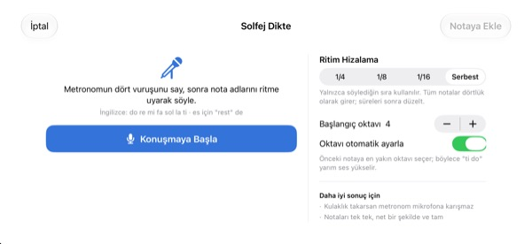
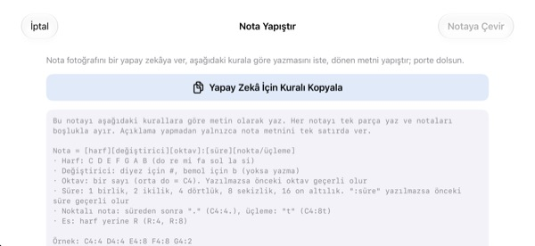

Kafanızda saymayı bırakın.
Kulağınızla duyun.
Takıldığınız iki ölçüyü portreye aktarın ve çal düğmesine dokunun. Bir ölçülük girişten sonra uygulama, metronoma uyarak yazıldığı ritim ve perdeyle çalar.
Tüm özellikler ücretsiz. iPhone ve iPad için.

Birkaç nota yazın ve dinleyin
Portreye basılı tutup yukarı ya da aşağı kaydırarak sesi değiştirin, bırakınca nota yerleşir. Çal’a basın, bir ölçülük girişten sonra duyarsınız. Ses çıkacak, ses düzeyini kontrol edin.
Ölçünün ortasında yine mi saydığınızı kaybettiniz?
Noktalı sekizlik, ardından onaltılık, hemen yanında da bir triole. Dizinize vurarak sayarken ölçünün ortasında her şey kayıyor. Koro provasından önceki akşam genelde yanınızda bir piyano da olmuyor. StaffSinger’da o iki ölçüyü portreye aktarmanız, doğru ritmi ve perdeyi duymanıza yeter.
Ritim ve perde, tam yazıldığı gibi
Bir ölçülük girişten sonra müzik metronom tıklarıyla çalar, o an çalan nota turuncu yanar. Tempo 40 ile 200 BPM arasında; ölçü 4/4, 3/4, 2/4, 6/8, 2/2 ya da 3/8 olabilir.
Aynı vuruşa üst üste konan notalar akor olarak birlikte çalar ve üç partiye kadar ayrı yazabilirsiniz. Sol, alto ve fa anahtarları ile donanım da var.

Nota adlarını söyleyin, notaya dönüşsün
Metronom dört vuruş saydıktan sonra vuruşa uyarak do re mi deyin, notalar portreye yazılır. Vuruşu tutturursanız süre de dörtlük, sekizlik ya da onaltılık olarak alınır. Sus için rest deyin.
Nota adlarını İngilizce söyleyin. Konuşma yalnızca cihazda tanınır ve kaydedilmez.

Nota fotoğrafını yapay zekâya verin, sonucu yapıştırın
Yapay Zekâ İçin Kuralı Kopyala düğmesine dokunun, kuralı notanın fotoğrafıyla birlikte yapay zekâya verin ve döndüğü metni yapıştırın. Portre kendiliğinden dolar. Biçim aşağıdaki tabloda.
Kâğıt notanın fotoğrafını çekip ekranda tutabilir, bakarak da aktarabilirsiniz.

Üç adımda başlayın
- 1
Zor ölçüleri seçin
Uygulama iki ölçülük boş bir portreyle açılır.
- 2
Notaları yazın
Portreye basın ya da piyano tuşlarını çalın.
- 3
Çal’a dokunun
Önce giriş, ardından metronomla çalma.
Yapıştırma için metin biçimi
- C4:4
- 4. oktavdaki Do, dörtlük (orta Do, C4)
- D:8
- Oktav yazılmazsa bir öncekiyle devam eder
- F#4:8 · Bb4:4
- Diyez için #, bemol için b
- E4
- “:süre” yazılmazsa bir öncekiyle devam eder
- :1 · :2 · :4 · :8 · :16
- birlik, ikilik, dörtlük, sekizlik, onaltılık
- C4:4.
- noktalı nota
- C4:8t
- triole
- R:4 · R:8
- suslar
Uygulamadaki Yapay Zekâ İçin Kuralı Kopyala düğmesi bu talimatları aynen kopyalar. Notaları boşlukla ayırın.
Tüm özellikler ücretsiz
Ücretsiz
- Portreye yazma ve iki oktavlık piyano
- Girişli ve metronomlu çalma
- Akorlar ve üç ses partisi
- Donanım ve üç anahtar
- Sesle nota adı yazdırma
- Metin yapıştırma ve referans fotoğrafı
Geliştiriciyi destekleyin
- Ayarlar’dan küçük bir bahşiş gönderebilirsiniz
- Bahşiş hiçbir özelliğin kilidini açmaz
Abonelik değildir. Her bahşiş tek seferlik bir ödemedir.
Reklam yok, hesap açmak gerekmiyor.
Sık sorulan sorular
Nota nasıl eklenir?
Önce araç çubuğundan süreyi seçin, sonra portrede istediğiniz yüksekliğe basın. Basılı tuttuğunuz sürece ses duyulur, bırakınca nota eklenir. Klavye düğmesiyle iki oktavlık piyanodan da girebilirsiniz.
Akor nasıl yapılır?
Araç çubuğundaki Akor düğmesini açıp nota ekleyin. Seçili notanın üstüne dizilir ve birlikte çalar.
Bir notayı nasıl düzeltirim?
Perdeyi değiştirmek için notayı yukarı ya da aşağı, başka bir vuruşa taşımak için yana sürükleyin. Nota seçiliyken ♯ ♭ düğmeleri yarım ses, 8va düğmeleri bir oktav kaydırır.
Tempo ve ölçü nereden değişir?
Ayarlar’dan; anahtar ve donanım da orada. Metronomu ve girişi de oradan açıp kapatırsınız.
Ses gelmiyor.
Sessiz modu ve medya ses düzeyini kontrol edin. Yalnızca metronom duyulmuyorsa Ayarlar’daki Çalma Yardımcıları bölümünde metronomun açık olduğundan emin olun.
Sesle yazma notaları karıştırıyor.
Metronom mikrofona karışmasın diye kulaklık takın ve her vuruşta bir notayı net söyleyin. Yanlış notayı sürükleyerek düzeltebilirsiniz.
Kamera neden gerekiyor?
Yalnızca kâğıt notanın fotoğrafını çekip karşılaştırmak için ekranda göstermek için. Fotoğraflar cihazdan çıkmaz. Kamera izni vermeden fotoğraf arşivinden de seçebilirsiniz.
Hangi cihazlarda çalışır?
iOS 17 veya sonrası yüklü iPhone ve iPad’de. Arayüz yatay kullanım için tasarlandı.
Notalarım ya da sesim bir yere gönderiliyor mu?
Hayır. Notalar, fotoğraflar ve sesiniz cihazda kalır, her şey internetsiz çalışır. Uygulamayı geliştirmek için yalnızca anonim kullanım istatistikleri ve çökme raporları iCloud’a gider.
Nasıl iletişime geçerim?
leeo@kakao.com adresine yazın, genellikle 2–3 iş günü içinde yanıt verilir. Hata bildirimleri ve öneriler GitHub’da M1zz/StaffSinger üzerinden issue olarak da iletilebilir.
Soru ya da görüşleriniz için leeo@kakao.com adresine yazın.